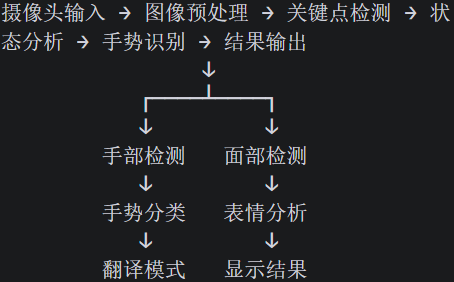

一 自我介绍
您好，我的名字叫做江自强 我来自中欧工程技术学院的信息工程大一 本人学业成绩优异，在校综合绩点3.87。我学习态度严谨、理解与落地能力较强，具备参与科研项目的理论基础与自主钻研能力。科创方面，我曾参与学院“企创中欧”创新创业大赛，项目核心围绕人工智能标准知识库搭建展开。在项目中，我深度参与整体研发工作，主要负责技术核心内容研发，同时独立完成项目汇报PPT的整体制作。目前我正在自主学习人工智能基础技术与相关硬件应用知识，主动对标人机交互、智能数字人、AR交互等前沿技术方向。我对无障碍智能交互系统研发抱有浓厚兴趣，能够快速融入团队，踏实完成算法辅助、系统搭建、实验调试、资料整理等研发工作，全力配合团队推进项目顺利开展。
我对本项目感兴趣处于以下几方面原因：
1、我了解到听障人士在就医时面临了巨大的沟通困难，但是市面上的手语翻译软件普遍存在着缺少完整医疗手语词库、上下文理解错位等缺陷，无法有效解决听障人士在就医上的困境。我希望能够加入您的项目团队，为智能医患沟通系统的研发贡献一份力量，有效解决听障人士在就医时面临的难题，保障他们得到高质量的就医体验。
2、我现阶段的学习大都停留在理论学习层面，我希望能在面向社会需求的工程项目中学习，并且在解决实际问题的过程中接触到前沿的技术和锻炼自己思考的能力
二 技术实现思路

1、手势识别方案: 根据手指状态组合匹配预定义手势
2、面部检测方案：根据面部关键点的相对位置预定义表情
3、翻译模式检测逻辑：hello (食指竖起 → 大拇指竖起) ThankU (Thumbs Up + 拇指下压3次) Apology (手竖直 → 移动下方+小拇指翘起)_
4、翻译模式核心算法：状态机设计（空闲状态 → 检测手势 → 显示结果 → 冷却期 → 空闲状态） 冷却机制（-检测到动作后，60帧内不检测任何手势，防止误触发和重复识别）
5、美化设计：在翻译模式取消关键点的展示，同时制造手指的残影效果
三 技术难点
1、翻译模式检测的准确性：某些手势容易误触发 有些则难以触发 （我尝试增大检测精度 但是误检测的问题依然存在 在加入其他等复杂的动作之后 这些动作之间的辨别难度增加 误判的问题将更加严重）
2、手势冲突：不同手势可能同时触发 （我设置了检测优先级和冷却期来规避这个情况 但是在实际情况下手速很快且语言密度大 我不知道该如何解决）
四 使用工具
1、在制作demo的主体部分我使用了trae来辅助我写代码
2、在搭建网站的时候我问了豆包html文件的一些基础语法